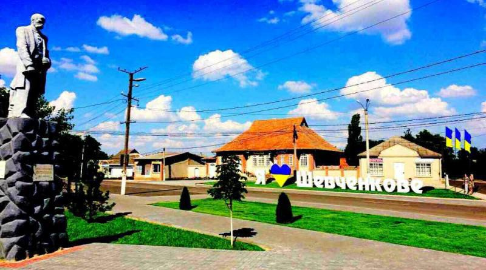
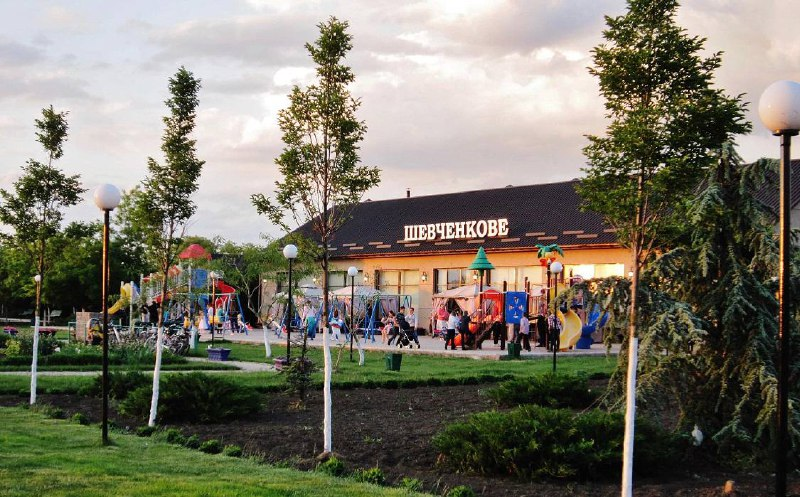
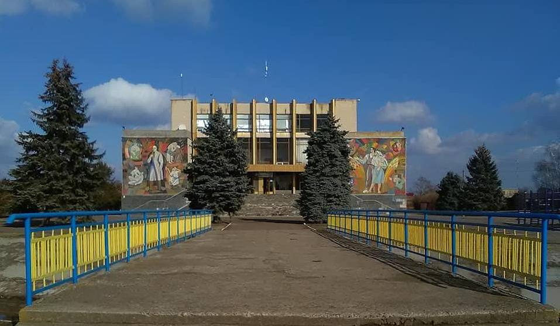

-

Пам'ятка "Я люблю Шевченкове"
Розташована в центрі села, вона була встановлена в 2018 році для мешканців та мандрівників. Збоку можна побачити пам’ятник Тарасу Григоровичу Шевченку, саме на честь нього назване моє селище.
-

Кафе-пам'ятка
Кафе "Шевченкове" розташоване біля мальовничого парку, який своєю красою здатен вразити будь-кого, навіть столичних жителів. Це цілий комплекс для активного відпочинку батьків з дітьми.
-

Дім культури
Центр культури, мистецтв і дозвілля нашого села. Приходячи туди можна зануритись в чарівну атмосферу історії села Шевченкове.